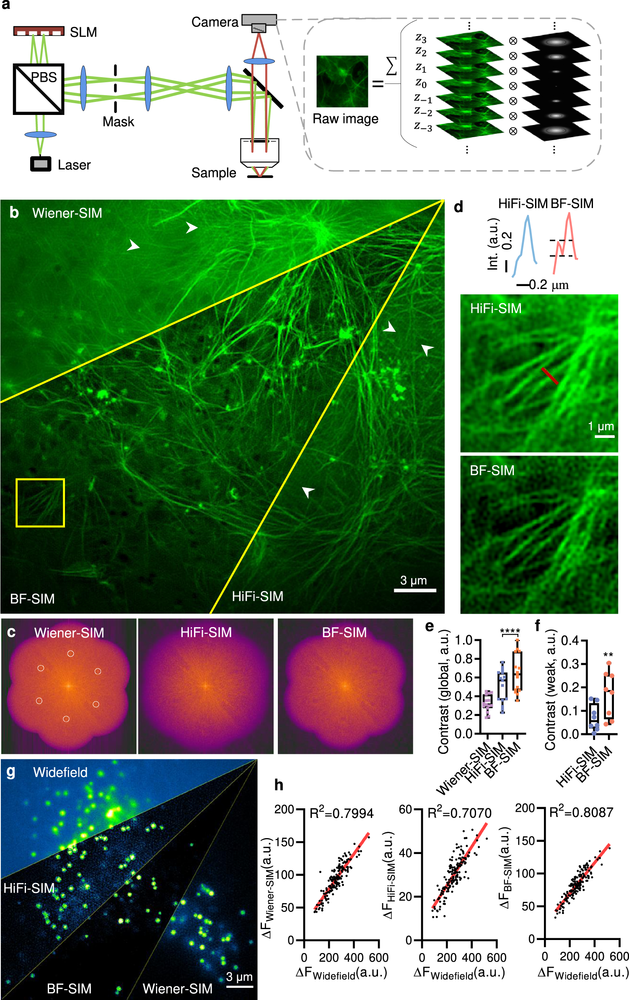

01 / PROGRAM
The SLM
Same brightness. Different phase.
The two colors encode delays of 0 and π. They are not bright and dark pixels.
0 phase π phase
MEET THE SPATIAL LIGHT MODULATOR
An SLM is a programmable grid of tiny phase delays. Give it a grating, pick two beams, and let interference paint the sample.
Change the grating below and follow the light from phase pixels to illumination. Switch either beam off to see why stripes need two beams.
Same brightness. Different phase.
The two colors encode delays of 0 and π. They are not bright and dark pixels.
The lens sorts light by direction.
Keep ±1; block the other orders. These two spots are relayed to the objective pupil.
Two directions. One striped pattern.
Where the fields add, light is bright. Where they cancel, it is dark.
A 2D-SIM ACQUISITION · SLOWED DOWN
The SLM holds one orientation for three exposures, then switches to the next orientation. Watch the phase grating, diffraction spots, and sample illumination update together.
Ready · 0°, 60°, 120° orientations × 0°, 120°, 240° phases.
Display timing is slowed for explanation, not a camera exposure time. Playback enables both beams and pauses when you leave the tab. Manual controls pause the sequence.
One field of view, updated in place. Every three phase shifts, the orientation changes. Angles describe the pattern-frequency direction, perpendicular to the stripe lines.
FIRST: WHAT IS FOURIER SPACE?
An image tells you where things are. Its Fourier transform tells you which repeating brightness patterns, at which spacings and directions, add up to make it. A cell does not have to look striped: every image can be built from these ingredients.
These fluorescent filaments are LifeAct-EGFP-labeled actin in a COS-7 cell. Thick bundles, thin filaments and narrow gaps contribute different spatial frequencies. Higher spatial frequency means smaller spacing: d = 1/f. It describes variation across distance, not speed or motion.
We use this same image throughout: remove its fine spatial frequencies, then explore which regions a SIM acquisition can recover.
Mo et al. (2023), Quantitative structured illumination microscopy via a physical model-based background filtering algorithm reveals actin dynamics, Figure 1b, BF-SIM region. CC BY 4.0. Green-channel crop, resampled to 256 × 256 and displayed in grayscale. The reference is a published reconstruction, not raw data. All filtering and support-extension results below are educational calculations from this reference, not new experimental measurements.

Click or drag in the frequency map. Moving away from its center makes the brightness pattern finer. Moving around the center rotates it. A point on the fₓ axis means brightness varies along x: the stripe lines themselves are vertical.
A real cosine uses a pair of complex Fourier coefficients at opposite frequencies. Radius sets spacing, direction sets variation direction, magnitude sets strength, and phase sets alignment. The magnitude plot alone is not the whole transform: phase is essential for recovering the image. The center (DC) gives mean brightness.
TRY REMOVING THE FINE INGREDIENTS
Here we compute a real Fourier transform of the actin crop above. Drag the radius to keep only low frequencies, then restore the outer ones. The right image is rebuilt with an inverse Fourier transform using the original phase.
Thin filaments and the narrow gaps between neighboring bundles require fine brightness variations. Those variations live farther from the Fourier origin. Keeping only the center preserves broad shapes, but loses the information that distinguishes nearby features.
A fluorescence microscope has a detection transfer function H(fₓ,fᵧ). For an ideal circular pupil its support ends at k꜀ = 2 NA / λₑₘ, and transfer already weakens before that cutoff. At a fixed wavelength, larger physical NA supports higher spatial frequencies. This slider is an educational frequency mask with a short cosine roll-off, not a calibrated NA control or an optical simulation of the original microscope. Frequency units are cycles across this cropped image.
“Restore reference” brings back coefficients already present in the reference SIM image. It cannot recover information from a low-resolution measurement alone and is not a SIM reconstruction. The crop is treated as periodic, so edge boundaries and JPEG artifacts also contribute Fourier content.
NOW: SIM WITH THE SAME ACTIN IMAGE
The narrow gaps between these filaments need spatial frequencies outside the central disk. Uniform illumination cannot transmit those frequencies. Structured illumination encodes them at lower spatial frequencies; phase stepping separates the encoded contributions so we can put them back in the right places.
The white circle is the detection cutoff k꜀. Each illumination angle gives two displaced regions, centered at +p and −p. They are shown at their reconstructed positions in the specimen’s Fourier space. Each has radius k꜀, just like the original circle.
Why the two shifted regions? Multiplying the cell by sinusoidal illumination creates two shifted copies of its entire Fourier spectrum, not just a pair of points. A patch originally centered around +p appears near the camera’s origin; a second patch around −p does the same. Three phase exposures distinguish these copies from each other and the central contribution. Reconstruction translates the separated patches back. Repeat at three angles: 3 × 2 = 6 extra regions.
Where does 2× come from? A shifted circle still has radius k꜀, but its center is displaced by p ≈ k꜀. Its outer edge therefore reaches k꜀ + p ≈ 2k꜀: about half the minimum feature spacing along those directions. The objective’s NA stays fixed. Six circles do not mean sixfold resolution, and the combined outline is not a perfect disk.
This is an ideal, noise-free frequency-coverage demonstration computed from the real actin reference, with its complex Fourier phase retained. It applies the union of the selected circular supports with a two-bin cosine edge taper and then an inverse FFT. It does not recover missing information from the blurred image or run a nine-frame SIM reconstruction. The left panel shows one isolated, shifted complex band’s magnitude after separation, not the FFT of a raw camera frame, which would contain all three overlapping terms. Actual reconstruction must estimate patterns, demodulate phases, account for the OTF and noise, and combine weighted bands.
For this example k꜀ = 24 cycles per crop. Integer Fourier-bin shifts (24, 0), (12, 21), (−12, 21) approximate 0°, 60°, 120°. This is an illustrative sampling choice, not the source microscope’s calibrated cutoff. Real excitation and emission wavelengths, modulation contrast and OTF attenuation determine the achievable extension.
A detail with spatial frequency q above k꜀ is not transmitted directly. Illumination with spatial frequency p produces a difference component q − p. If that difference falls inside the detection disk, its information is measurable. “Lower frequency” here means broader spacing in the image, not slower motion.
Nothing physically moves inside the cell. Multiplying its fluorescence by a known stripe pattern creates extra frequency components. A fine specimen pattern q and an illumination pattern p produce a coarse difference pattern q − p. This new component can pass through the same optics even when q itself cannot.
Recording a coarse beat does not, on its own, tell us which fine pattern caused it. We know p because we programmed it. Phase-shifted exposures separate the overlapping contributions; the reconstruction then assigns that contribution back to q = (q − p) + p. This is encoding and decoding information, not making a blocked ray pass through a wider hole.
Try these actions, then drag a purple point in the left diagram. The detail direction and illumination direction are independent. Only a beat inside the fixed white circle is transmitted. The diagram follows whichever of the two sidebands q ± p lies closer to the origin.
01 / WHAT THE CAMERA CAN TRANSMIT
02 / WHAT RECONSTRUCTION CAN RECOVER
Each trace is a cross-section along its own variation direction. The lower trace isolates the difference-frequency component of a sinusoidal specimen × illumination example, after the ideal circular-aperture OTF. It is not the full raw image. Its contrast fades near the detection cutoff.
Each camera image contains three overlapping contributions: the central specimen spectrum and two shifted copies. Three known illumination phases change their weights, allowing those contributions to be separated. Phase steps do not move the passband or add new support circles.
One orientation extends coverage along one axis. Rotating the pattern adds two more pairs of shifted supports, producing the familiar six-petal SIM footprint. The added coverage belongs to the reconstruction, not a physically larger pupil.
Recovered support reaches k꜀ + p along the illumination directions. With p approaching k꜀, that approaches 2k꜀. This assumes comparable excitation/emission wavelengths and illumination using nearly the full NA. The three-angle footprint is not a perfect disk, and signal falls toward its edges; practical resolution also depends on contrast, noise and reconstruction.
These are schematic Fourier-support diagrams and analytic sinusoidal components, not FFTs of a recorded specimen. The passband circle represents the support of the fluorescence OTF, not the physical pupil radius. For a clear comparison, this model assumes equal excitation and emission wavelengths and maps the five presets to p/k꜀ = 0.40, 0.55, 0.70, 0.85, 1.00; these are not calibrated SLM settings.
Ideal 50% duty-cycle binary phase grating; coherent, equally polarized ±1 plane waves; matched beam amplitudes; no aberrations. The zero order vanishes for this ideal grating, and higher odd orders are blocked. We show the first and third orders schematically. Relay magnification and numerical aperture are not calibrated.
For grating coordinate u, g(u) = sign[cos(2πfu + φ/2)]. Selecting ±1 produces I(u) ∝ 1 + cos(4πfu + φ). Thus sample intensity has twice the grating’s spatial frequency in conjugate coordinates, and translating the grating controls illumination phase. One selected beam gives uniform intensity at half the two-beam mean; neither beam gives darkness. Real SLMs have pixelation, efficiency losses and polarization constraints.
This is two-beam 2D SIM. Three-beam 3D SIM also uses the zero order and needs a different acquisition scheme. Nine exposures here do not themselves constitute a reconstruction. The rotating acquisition is displayed slowly for inspection.
Read more: SLM-based structured illumination · Questions about SIM · Original optical-path diagram